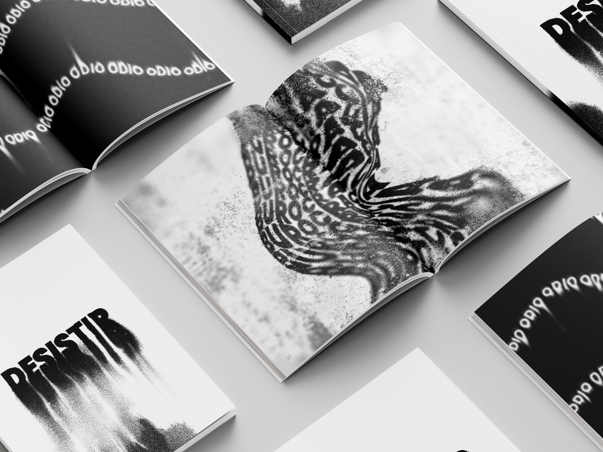
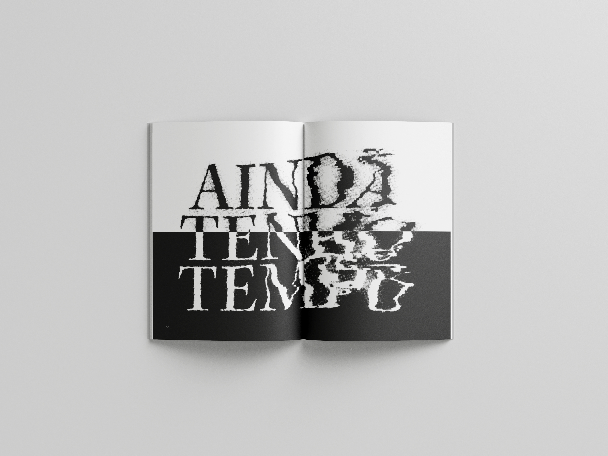
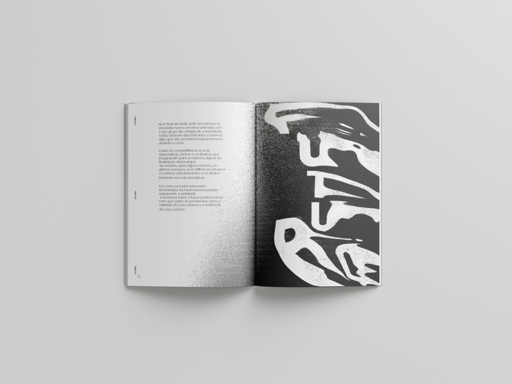
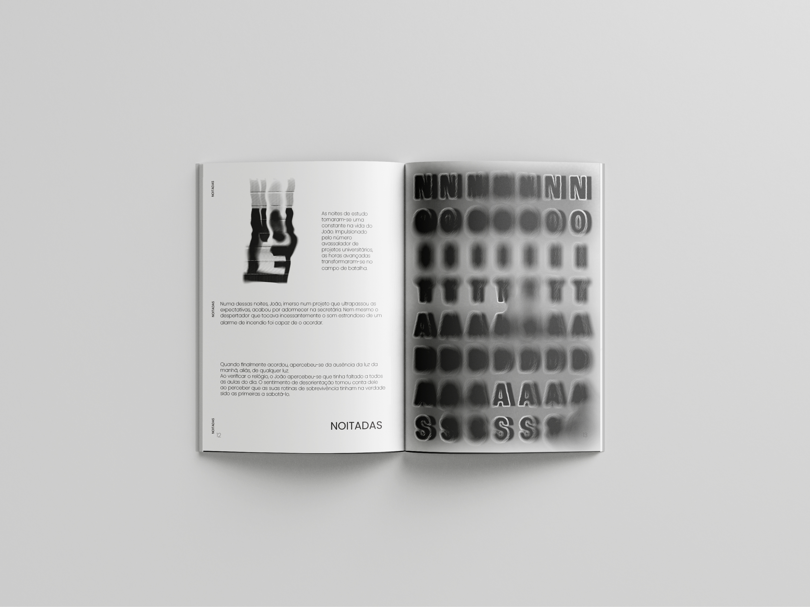
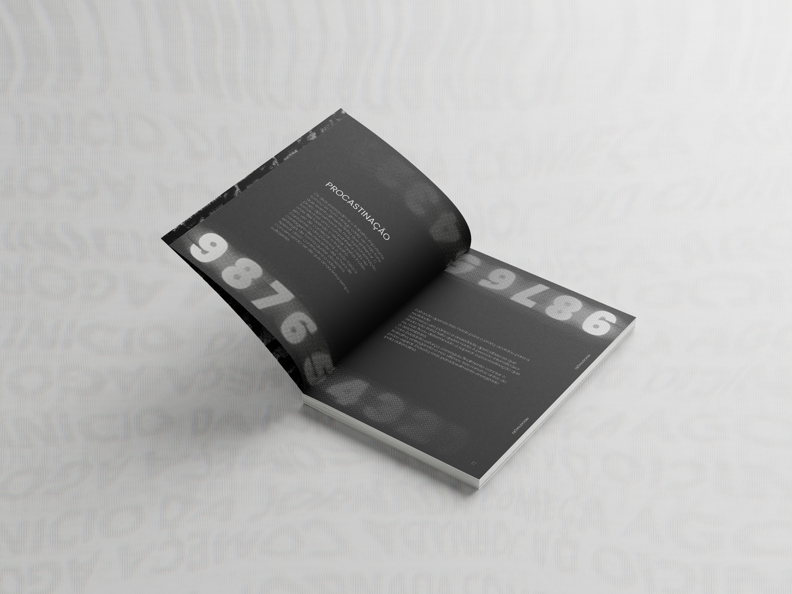
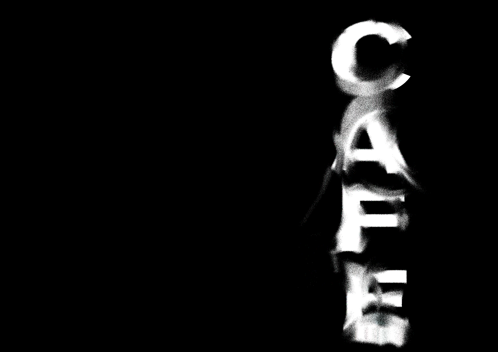
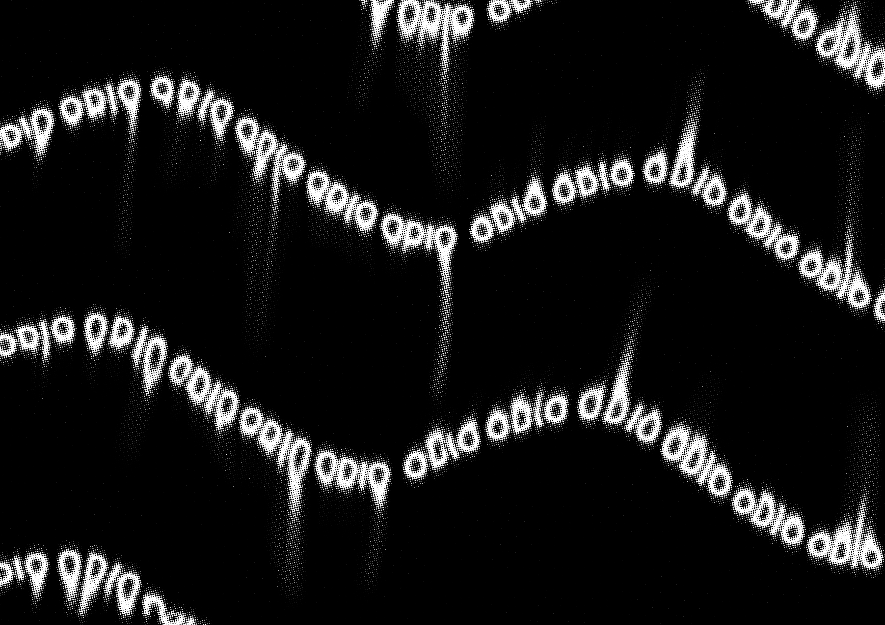

DESISTIR

Synopsis
"DESISTIR" is a book that explores a teenager's entry into university life. Despite initially being motivated, João quickly realizes the challenge and difficulties of the path he has chosen.
This project was developed by me at the School of Media Arts and Design (ESMAD) of the Polytechnic Institute of Porto. It was carried out within the scope of the Communication Design II Course Unit, where we were challenged to create a complete book. The project involved all stages of the creative and technical process: from story creation, through illustrations, to the digital and physical assembly of the book, including manual binding.
Gallery: Process & Assembly



Visual Style
Once again, as in other projects, I focused on typographic illustration. The book's graphic line is heavily based on the use of contrasts and distortions, which become the main illustrative element of the entire visual narrative.
Gallery: Visual Style & Typography








